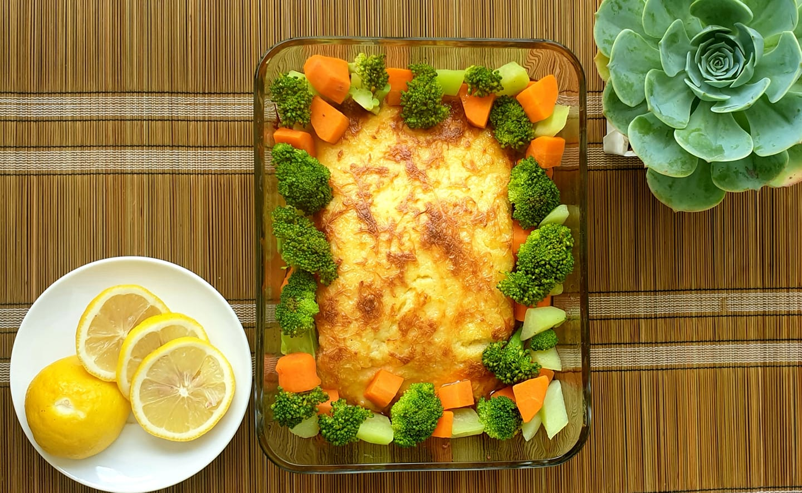
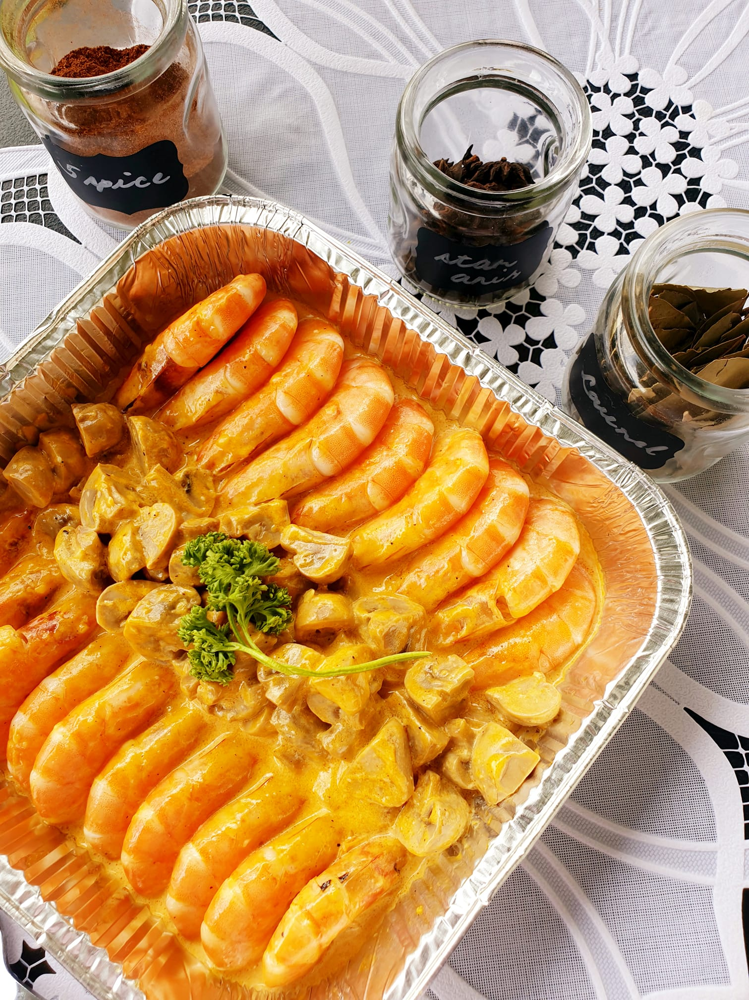
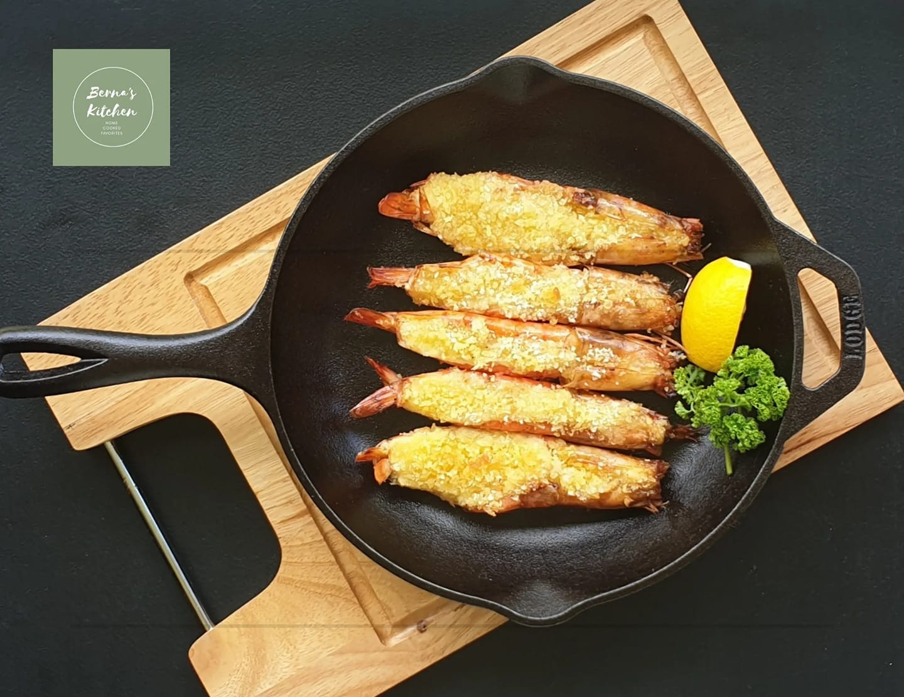
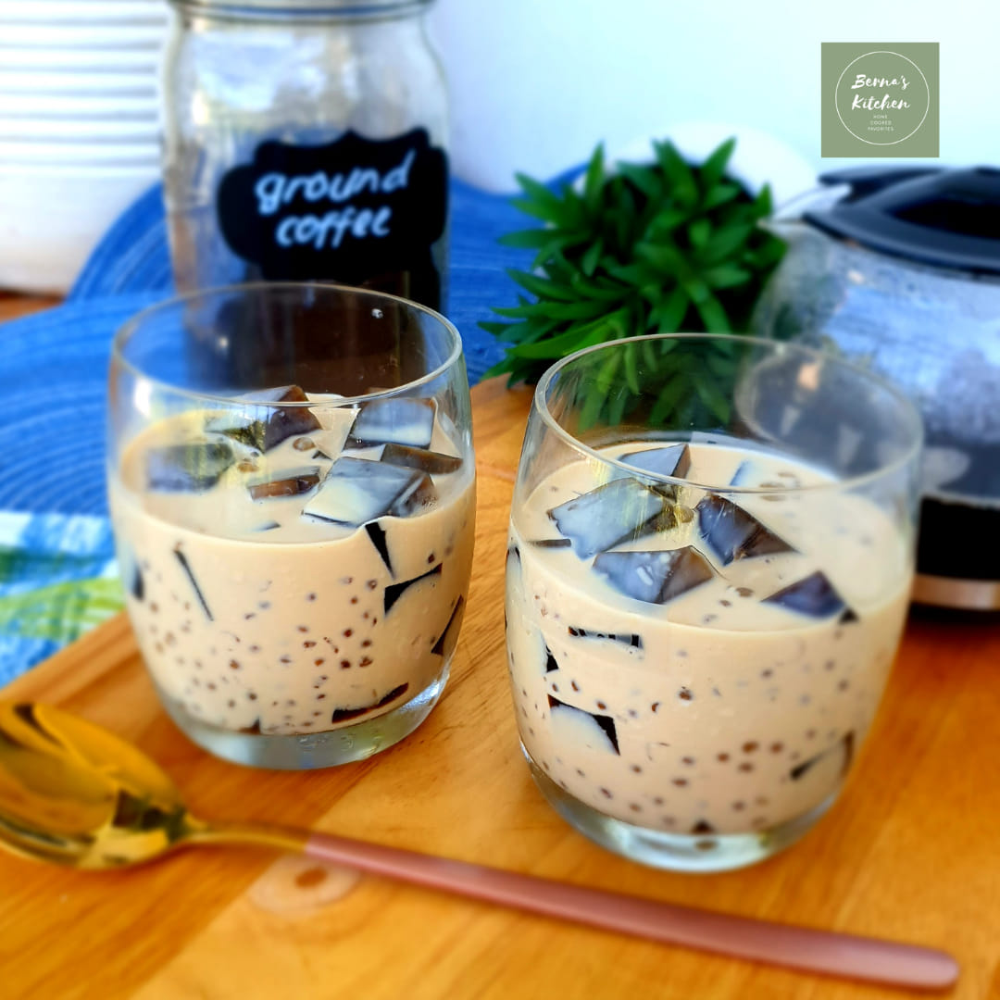

| THE GALLERY | ||||
|---|---|---|---|---|

Baked Herbed ChickenA premium baked chicked with thyme and other spices. With baby potatoes and gravy on the side |

Baby Back RibsPork baby back ribs, spiced with a smoky - sweet homemade dry rub and finished with my special bbq sauce. Comes with coleslaw, an ultimate fall off the bone experience! |

Kare KareKare Kare, its a peanut stew complemented with sauteed fermented shrimps or we call it "Bagoong". |

Baked SalmonBaked Salmon - A slab of pink salmon, baked and crusted with cheese, herbs and secret sauce. Paired with seasonal veggies and our favorite white garlic butter dip and lemon wedges. |

Shrimp Con MayonesaA concoction of garlic, butter, shrimp, mushroom, mayo with herbs and spices. A sure crowd pleaser. |

Pasta GenoveseFarfalle pasta embeded with my own twist on classic pesto sauce, olive oil, parmesan, peppers, shrimps and mushroom. Best paired with any protein dish. |

Beef Stroganoff with Mashed PotatoesA concontion of beef cooked to its tenderness and our version of mushroom sauce, topped with more shrooms and french beans, paired with mashed potato. A great combination right? |

Flat PorchettaFlat Porchetta, a slab of pork belly marinated with garlic, our special rub and then baked to its perfection for that crispy skin, soft and tender meat inside. |

Baked PrawnsA cheesy and extra tasty dish that’s full of protein. A comfort food, that will surely delight you in every bite |

Premium Baked MacPasta coated with a tasty and meaty marinara sauce, covered with a heavenly cheese sauce and then baked to perfection until a bit toasted and melty. ) |

Fresh Vegetable LumpiaFresh handmade egg wrapper, lettuce, veggies cooked and seasoned perferctly to match its sweet savory sauce, chopped nuts and garlic. |

Chunky Overload Potato SaladA classic recipe made with potatoes, chicken, eggs, mayo and spices. Guaranteed yumminess in evey bite. |

Black Kuchinta with Dulce De Leche Dip and Toasted CoconutA famous local kakanin known as kuchinta with a twist. Mixture of flour, cassava, sugar and whole lot of loving. |

White Chocolate Cranberry Walnut CookiesThese White Chocolate Cranberry Walnut Cookies are chewy, soft, thick and filled with premium ingredients. |

Coffee Jello CoolerA glass of cold Coffee Jello Cooler while reading a book by pool or beach? |